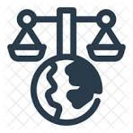

| # | Name | Registration Number | Presentation Section |
|---|---|---|---|
| 1 | MEMBER 1 FELIX KIPNGETICH | ED102/G/13586/21 | Introduction & Legal Framework |
| 2 | MEMBER 2 SAMUEL OTEK | ED102/G/9968/20 | Teachers Service Commission (TSC) |
| 3 | MEMBER 5 VITALIS THUO | ED102/G/20881/23 | KNUT |
| 4 | MEMBER 4 LAWRENCE | ED102/G/20881/23 | KUPPET |
| 5 | MEMBER6 SAMUEL NDUNGU | ED102/G/13522/21 | Parents, Students & Summary |
Established under Article 237 · Independent constitutional commission
| Function | Description |
|---|---|
| Human Resource Management | Registers, recruits, deploys, transfers, promotes, and disciplines teachers in all public primary, junior secondary, and senior secondary schools. |
| Quality Assurance & Standards | Monitors teacher performance and compliance with professional teaching standards across schools. |
| Capacity Building | Coordinates Continuous Professional Development (CPD) programs to equip educators for curriculum reforms, such as the Competency-Based Curriculum (CBC). |
| Policy Advisory | Advises the national government on teacher demand, supply, and overall budget implications. |
Represents: Teachers in public primary schools and entry-level positions
| Role | Description |
|---|---|
| Collective Bargaining | Negotiates Collective Bargaining Agreements (CBAs) with the TSC regarding salaries, medical cover, allowances, and retirement terms. |
| Welfare & Rights Advocacy | Protects teachers against unfair disciplinary actions, arbitrary transfers, or poor working conditions. |
| Instructional Leadership | Contributes to national educational dialogues and advocates for adequate resources so teachers can deliver quality education. |
Represents: Secondary schools, Junior Secondary Schools (JSS), TVETs, and tertiary colleges
| Role | Description |
|---|---|
| Targeted Representation | Negotiates specialised terms of service unique to post-primary institutions, such as laboratory allowances and risk management frameworks. |
| Professional Development Advocacy | Pushes the government and TSC to offer sponsorship, fair promotions, and adequate training for post-primary tutors during systemic shifts like the CBC rollout. |
| Legal Support | Offers legal defense and representations for member teachers facing employment or administrative disputes. |
Engage through PTA and BOM
Primary internal stakeholders

| Stakeholder | Core Contribution | 2026 Status |
|---|---|---|
| TSC | Employment, standards, policy advisory | Recruitment shifted to Junior/Senior Schools |
| KNUT | Primary teacher welfare & collective bargaining | Opposes JSS autonomy; clashes with KUPPET |
| KUPPET | Post-primary teacher welfare & legal support | Demands JSS autonomy; clashes with KNUT |
| Parents | Resources, governance, home learning support | 5 BOM committees; 39% cite fees as biggest barrier |
| Students | Engagement, leadership, feedback | EE/ME/AE/BE assessment; 45% public dissatisfaction |